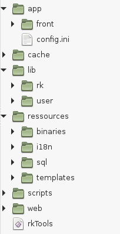
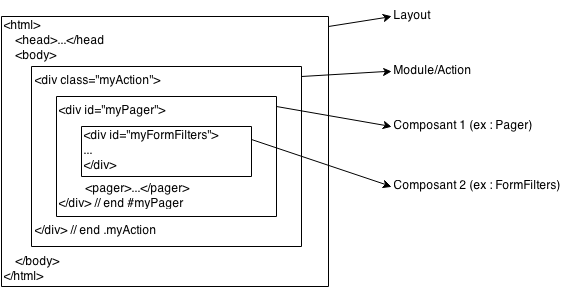
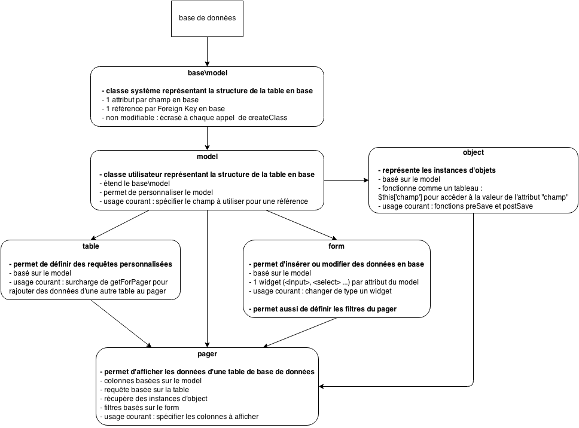
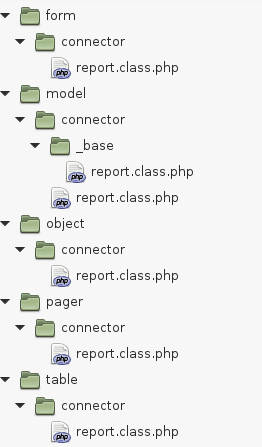
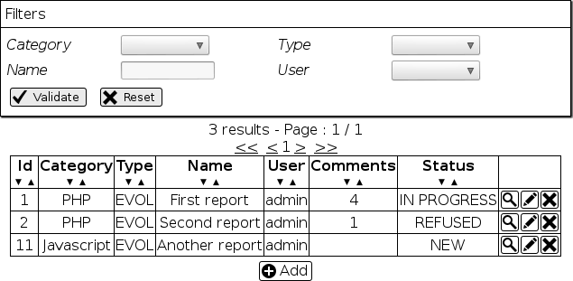
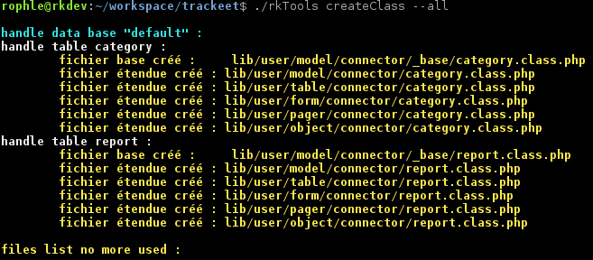
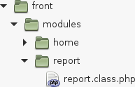
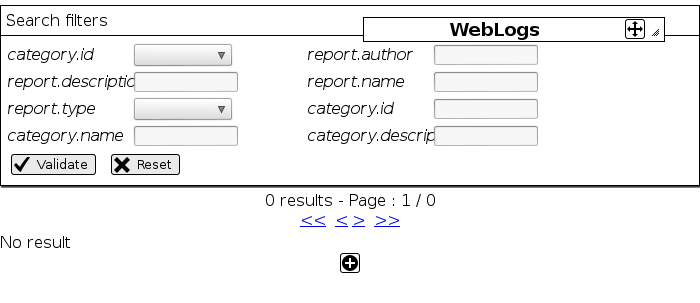
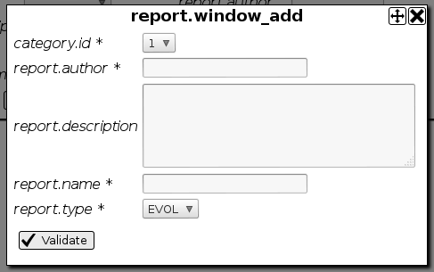

Bienvenue sur trackeet, le tutoriel de framewoRK !
Ce tutoriel est en cours de développement !
Le dépôt étant privé pour le moment, les sources ne sont disponibles que pour les utilisateurs référencés.
Il n'est que partiellement testé, et fait régulièrement
référence à des pages d'une documentation qui n'existe pas encore.
Merci de signaler tout problème par skype, mail, IRL ou bien sur
https://github.com/rk-team/framewoRK/issues.
De même, si vous avez des suggestions, faites le savoir.
Ce projet a pour but de permettre une prise en main rapide du framewoRK, en présentant ses différentes fonctionnalités par l'exemple.
Fonctionnalités de framewoRK
framewoRK a pour but de faire gagner du temps aux développeurs sans pour autant sacrifier les performances ni l'expérience utilisateur :
- la plupart des composants PHP permettent de piloter simplement des fonctionnalités Javascript avancées (modales, ajax, ...)
- framewoRK offre aussi un ORM simple mais néanmoins puissant afin de gérer simplement la partie SQL de vos projets
- l'internationalisation de votre projet est géré, tant pour les traductions statiques de votre site, que pour les données stockées en base
- des systèmes de mise en cache des JS, CSS et de vos traductions autorisent des temps de réponse optimisé
- basé sur un modèle fortement MVC, tout ce que vous affichez provient d'un template, et vous pouvez donc personnaliser chaque élément de l'affichage
framewoRK
Pour illustrer tout cela, nous allons créer un tracker de projet basique permettant de gérer des remontées utilisateur et de suivre leur état.
Nous partons donc d'un projet rk vierge, récupérable depuis github
ici.
Arborescence d'un nouveau projet

-
app : ce dossier contient l'ensemble des Actions (les Controlleurs du modèle MVC) de notre projet ainsi que leurs templates.
L'arborsence interne est au format <application>/modules/<module>/ et contient une classe action, ainsi qu'un dossier template.
Ce dossier contient aussi le fichier config.ini qui permet de définir les paramètres de configuration du projet.
-
cache : ce dossier contient les différents fichiers de cache gérés par le framewoRK
-
lib : ce dossier contient les sources du framework (sous dossier rk), ainsi que les classes utilisateurs (sous dossier user)
-
ressources : ce dossier content l'ensemble des fichiers n'étant pas des classes PHP :
- binaries : fichiers binaires utilisés par le framework
- i18n : fichiers XML servant à gérer les traductions statiques
- sql : scripts SQL permettant de sauvegarder des fixtures
- templates : ensemble des modèles servant à afficher les différents composants de l'application
-
scripts : ce dossier content l'ensemble des scripts utilisés par le framewoRK (cf LIEN VERS RKTOOLS)
- cc : le script "clear cache" est chargé de supprimer tous les fichiers mis en cache dans le dossier "cache" du projet.
- createClass : ce script permet la génération des classes de l'ORM, en se basant sur les bases de données définies dans config.ini
-
web : ce dossier content l'ensemble des médias destinés à être servis par le projet.
-
A la racine, se trouve un script bash rkTools qui permet de lancer les scrips présents dans le dossier "scripts" (cf LIEN VERS RKTOOLS).
Construction de l'affichage

L'affichage d'une page est géré grâce à des templates imbriqués :
-
Layout : contient les entêtes et bas de page communs à toutes les pages.
Par défaut, le layout ressources/templates/rk/layouts/default.php est utilisé.
Afin de le personnaliser pour l'application "front", il suffit de créer le fichier ressources/templates/user/layouts/front.php (cf LIEN VERS AFFICHAGE).
-
Module/Action : correspond au template défini pour l'action demandée dans la requête.
Pour l'action "index" du module "home" de l'application "front", le template sera app/front/modules/home/templates/index.php (cf LIEN VERS ACTION).
-
Composant 1 (optionnel) : correspond au template utilisé par un composant de l'action demandée.
Par exemple, si notre action contient un pager, le template défini pour ce pager sera utilisé (par défaut : ressources/templates/rk/table.php).
Afin d'utiliser un template de pager personnalisé appelé "myPager", il faudrait créer le fichier ressources/templates/user/pagers/myPager.php (cf LIEN VERS PAGER).
-
Composant 2 (optionnel) : correspond au template utilisé par un second composant de l'action demandée.
Par exemple, si notre action contient un pager, on aura par défaut un composant FormFilters intégré, et le template défini pour ce FormFilters sera donc utilisé (par défaut : ressources/templates/forms/filters.php).
Afin d'utiliser un template de FormFilters personnalisé appelé "myFilters", il faudrait créer le fichier ressources/templates/user/forms/myFilters.php (cf LIEN VERS FORM).
Fonctionnement de l'ORM
L'ORM de framewoRK permet la génération automatique de classes (via le script createClass) en lisant la définition des bases de données configurées pour le projet.


Prenons l'exemple d'une base de données contenant une table "report".
Si l'on appelle le script
createClass, les différentes classes générées seront :
-
\user\form\report : basé sur le model. Permet de configurer l'affichage des formulaires correspond à la table "report" (cf LIEN VERS FORM).
Ce fichier n'est généré que s'il n'existe pas, et est donc voué à être modifié.
-
Model :
-
\user\model\_base\report : contient les attributs et références de la table "report" tels que définis en base de données.
Ce fichier est regénéré à chaque appel du script createClass et ne doit donc pas être modifié.
-
\user\model\report : version utilisateur du "model\_base"
Permet par exemple de définir quel champ d'une référence étrangère utiliser pour l'affichage des formulaires (cf LIEN VERS MODEL).
Ce fichier n'est généré que s'il n'existe pas, et est donc voué à être modifié.
-
\user\object\report : basé sur le model. Permet de définir des méthodes spécifiques aux instances d'objets correspondants à la table "report".
Exemple : méthode "preSave" qui sera appelée avant de faire la requête de sauvegarde en base de données (cf LIEN VERS OBJECT).
Ce fichier n'est généré que s'il n'existe pas, et est donc voué à être modifié.
-
\user\pager\report : basé sur le model. Permet de configurer l'affichage du pager pour la table "report" (cf LIEN VERS PAGER).
Ce fichier n'est généré que s'il n'existe pas, et est donc voué à être modifié.
-
\user\table\report : basé sur le model. Permet d'écrire des requêtes SQL spécifiques.
Ce fichier n'est généré que s'il n'existe pas, et est donc voué à être modifié.
On remarque que tous les fichiers générés sont créés dans un dossier "connector", afin de permettre de les différencier d'éventuels fichiers créés manuellement.
Les pagers
framewoRK permet la création rapide de "pagers" basé sur un modèle, qui se présentent par défaut sous la forme d'un tableau paginé avec des filtres de recherche.

- En haut, un bloc de filtres générés en fonction du modèle et de ses références en base.
- Au milieu, le nombre de résultats et des liens de pagination.
- En bas, le tableau de résultats, avec 3 boutons d'action pour chaque rapport, et un bouton d'ajout de rapport
Un pager peut être configuré pour ne pas afficher de filtres et/ou ne pas gérer de pagination (et donc systématiquement afficher tous les résultats).
Comme on peut aussi configurer le template à utiliser pour l'affichage du pager, ils sont utilisables dans bien des cas, dès qu'il s'agit d'afficher un ensemble de données récupérées d'une base de données.
Chapitre 1 : Installation
1. Prérequis
- serveur Apache avec PHP 5.5+
- serveur mySQL
- un interpréteur BASH car les scripts n'existent pas en version Windows actuellement
2. Configuration d'apache
Nous allons définir et utiliser un nom de domaine fictif pour ce tutoriel : trackeet.rk.
// /etc/hosts
127.0.0.1 trackeet.rk
Il ne reste plus qu'à définir le virtual host. En supposant que les sources soient dans /home/www/trackeet
// /etc/apache2/sites-available/trackeet.rk
// ou /etc/apache2/sites-available/trackeet.rk.conf selon la version du serveur apache
<VirtualHost *:80>
ServerName trackeet.rk
DocumentRoot /home/www/trackeet/web
<Directory />
Options +ExecCGI
AllowOverride All
</Directory>
</VirtualHost>
Activation du site et reload d'apache
sudo a2ensite trackeet.rk
sudo service apache2 reload
On s'assure ensuite qu'apache ait le droit sur les sources :
cd /home/www/trackeet
sudo chmod -R 755 .
sudo chmod -R 775 ./cache
sudo chmod -R 775 ./web/uploads
3. Le fichier de configuration
Voici le contenu du fichier de config /app/config.ini
[project]
default_application = front
languages = [fr, en]
default_language = fr
dbg_IPS = [127.0.0.1]
dev_IPS = [127.0.0.1]
[db]
default.type=mysql
default.host=localhost
default.port=3306
default.user=rk
default.password=rk
default.database=trackeet
default.behaviours.creationDate.requires_field=date_added
default.behaviours.updateDate.requires_field=date_updated
Les paramètres de configuration sont décrits de la façon suivante :
[project] : catégorie du paramètre
default_application : nom du paramètre
front : valeur du paramètre
Pour accèder à ce paramètre, il faut appeler \rk\manager::getConfigParam('project.default_application')
On remarque que certaines valeurs sont des tableaux comme languages = [fr, en]. Appeler \rk\manager::getConfigParam('project.languages') retournera un tableau PHP avec 2 valeurs : "fr" et "en".
-
[project] : configuration commune à toutes les applications
- project.default_application : nom de l'application à utiliser quand aucune application n'est fournie dans l'URL
- project.languages : liste des langues disponibles pour le projet
- project.default_language : langue par défaut
- project.dbg_IPS : liste des IPs pour lesquelles la barre de WebLogs apparaitra
- project.dev_IPS : liste des IPs pour lesquelles l'accès au mode "dev" est autorisé. Le mode dev permet d'obtenir les versions non minifiées des JS et CSS, ainsi que la regénération des caches i18n et d'autoload PHP.
L'activation de ce mode a donc un impact conséquent sur les performances et ne devrait jamais être utilisé sur un serveur de production.
- [db] : configuration des bases de données
Pour chaque base de données à utiliser sur le projet, on doit lui donner un nom (ici "default") et un certains nombres de paramètres décrits ci-après.
Si la base a un nom autre que "default", ce nom sera utilisé dans le namespacing de l'ORM et devra être fournie pour récupérer les instances de table (ex avec une base de données nommée "trackeet" : \rk\table::on('trackeet\report') et \user\form\trackeet\report au lieu de \rk\table::on('report') et \user\form\report).
Chaque base de données doit être décrite de la façon suivante :
- db.<name>.type type de SGBD. Supportés actuellement : mysql et pgsql
- db.<name>.host host du serveur
- db.<name>.port port du serveur
- db.<name>.user utilisateur du serveur
- db.<name>.password mot de passe pour l'utilisateur
- db.<name>.database nom de la base de donnée
- db.<name>.behaviours définition des comportements
Les comportements sont des traitement automatiques à appliquer suivant des noms de champs.
Deux comportements existent actuellement :
- creationDate définit via "requires_field" : si une table a un champ <valeur de la conf>, il sera automatiquement utilisé lors d'un INSERT en base pour contenir la date et heure d'insertion
- updateDate définit via "requires_field" : si une table a un champ <valeur de la conf>, il sera automatiquement utilisé lors d'un UPDATE en base pour contenir la date et heure de mise à jour du champ
Il existe un comportement "i18n" qui se base sur des suffixes de table, mais non utilisé dane ce tutoriel lien vers i18n en base
Chapitre 2 : "Mon premier CRUD"
A. Préparation de la base + génération des classes ORM
Nous allons dans ce chapitre mettre en place notre premier CRUD (Create Read Update Delete).
Pour cela, nous allons créer et utiliser les tables "report", qui contiendra toutes les demandes utilisateurs enregistrées,
et "category" qui nous permettra d'attribuer à chaque demande une catégorie (et accessoirement, de voir comment se comportent les Foreign Key dans framewoRK)
Je vous propose donc le script de création SQL suivant :
CREATE DATABASE `trackeet` DEFAULT CHARACTER SET utf8 COLLATE utf8_bin;
USE `trackeet`;
CREATE TABLE IF NOT EXISTS `category` (
`id` int(11) unsigned NOT NULL AUTO_INCREMENT,
`name` varchar(250) COLLATE utf8_bin NOT NULL,
`description` text COLLATE utf8_bin NOT NULL,
`date_added` datetime DEFAULT NULL,
`date_updated` datetime DEFAULT NULL,
PRIMARY KEY (`id`)
) ENGINE=InnoDB DEFAULT CHARSET=utf8 COLLATE=utf8_bin AUTO_INCREMENT=3 ;
INSERT INTO `category` (`id`, `name`, `description`, `date_added`, `date_updated`) VALUES
(1, 'PHP', 'Toute remarque relative au PHP', NULL, NULL),
(2, 'Javascript', 'Toute remarque relative au Javascript', NULL, NULL);
CREATE TABLE IF NOT EXISTS `report` (
`id` int(11) unsigned NOT NULL AUTO_INCREMENT,
`category_id` int(11) unsigned NOT NULL,
`author` varchar(250) COLLATE utf8_bin NOT NULL,
`description` text COLLATE utf8_bin,
`name` varchar(250) COLLATE utf8_bin NOT NULL,
`type` enum('EVOL','BUG','DOC') COLLATE utf8_bin NOT NULL,
`date_added` datetime DEFAULT NULL,
`date_updated` datetime DEFAULT NULL,
PRIMARY KEY (`id`),
KEY `category_id` (`category_id`)
) ENGINE=InnoDB DEFAULT CHARSET=utf8 COLLATE=utf8_bin AUTO_INCREMENT=2 ;
ALTER TABLE `report`
ADD CONSTRAINT `report_ibfk_1` FOREIGN KEY (`category_id`) REFERENCES `category` (`id`);
INSERT INTO `report` (`id`, `category_id`, `author`, `description`, `name`, `type`, `date_added`, `date_updated`) VALUES
(1, 1, 'rophle', 'My first report !', 'First report', 'EVOL', '2014-11-24 13:45:36', '2014-11-24 13:45:36');
CREATE USER 'rk'@'localhost' IDENTIFIED BY 'rk';
GRANT ALL PRIVILEGES ON `trackeet` . * TO 'rk'@'localhost' WITH GRANT OPTION ;
Une fois les tables créées, il faut demander la génération des classes de l'ORM grâce à ./rkTools createClass --all

On constate que le script a créé tous les fichiers (modèle de base + modèle, table, form, pager et object) pour les table "report" et "category".
B. Création du module

Nous allons ajouter un module "report" à notre application front : il suffit de créer un dossier "report" dans le dossier app/front/modules et d'y placer un fichier "report.class.php".
Nous pouvons aussi y ajouter un dossier "templates" servant à stocker le template propre à chacune des actions de notre module. Cependant, comme nous allons utiliser la méthode getCrud, nous n'avons pas besoin de template au niveau de l'action.
Mettons dans "report.class.php" le contenu suivant
<?php
namespace user\front\modules\report;
class index extends \rk\app\action {
public function execute() {
$this->getCrud('report', $this->params);
}
}
- namespace user\front\modules\report; : les classes d'actions doivent respecter le namespace suivant : user\<application>\modules\<module>
- class index extends \rk\app\action : pour chaque action du module "report", nous devons définir une classe étendant \rk\app\action
- public function execute : les actions doivent avoir une méthode publique execute qui sera appelée pour générer l'affichage de l'action
- $this->getCrud('report', $this->params); : pour notre action, nous allons nous contenter d'appeler la méthode getCrud en lui demandant un CRUD basé sur le model "report". Cette méthode instanciera un objet de classe \rk\crud
Dans framewoRK, les URL sont au format
/_<app>/<module>/<action>, chaque partie étant optionnelle.
-
_<app> : nom de l'application (préfixé par un "_").
Si absent, le paramètre project.default_application de la configuration sera utilisé (valeur par défaut : front).
Par exemple, si on rajoute une application "back", on y accèdera via des URLs commençant par /_back/.
-
<module> : nom du module
Si absent, framewoRK ira automatiquement chercher un module appelé "home" dans l'application trouvée.
Par exemple, dans notre cas, nous avons rajouté un module "report" dans l'application "front" (qui correspond au paramètre project.default_application), et nous pouvons donc y accèder
via /_front/report ou plus simplement /report.
-
<action> : nom de l'action
Si absent, framewoRK ira automatiquement chercher une action appelée "index" dans le module trouvé.
Par exemple, si on rajoutait une action "statistics" dans notre module "report", on y accèderait via /report/statistics.
Comme nous sommes en plein développement, nous allons rajouter /dev au début de toutes les URLs.
Ce paramètre permet de demander au framewoRK de regénérer tous les caches à chaque appel de page. Sans cela, il faudrait vider le cache (./rkTools cc) à chaque ajout de classe.
Nous allons donc nous rendre sur /dev/report pour voir notre CRUD.
C. Présentation
MAJ IMG

Nous obtenons l'affichage d'une instance de
\user\pager\report.
-
En haut : des filtres de recherche automatiquement intégrés affiché via un \rk\form\filters basé sur \user\model\report.
On trouve un filtre (input ou select selon le type de champ en base) pour chacun des attributs de notre modèle, à l'exception de la clé primaire.
On trouve aussi un filtre pour chacun des champs des références du modèle.
Dans notre cas :
- on retrouve un filtre pour chaque attribut du modèle "report" (sauf category.id, voir plus bas)
- le modèle "report" a une référence sur "category", et on retrouve donc "category.id", "category.name" et "category.description" dans nos filtres.
Le filtre "category.id" semble doublé. En réalité, ce n'est pas le cas car nous avons :
- un <select name="rk-form-filters[category_id]" ... > qui est relatif à l'attribute "category_id" du modèle "report".
- un <input name="rk-form-filters[category.id]" ... > qui est lui relatif à l'attribute "id" du modèle "category".
En effet, comme une référence vers "category" est définie dans le modèle "report", framewoRK remplace automatiquement le filtre par défaut de l'attribut "category_id" par un <select> avec comme <option> les différentes valeurs existantes en base pour la table référencée.
Du coup, le filtre par défaut (qui devrait être un <input type="text" name="rk-form-filters[category_id]" ... >) est remplacé par un <select name="rk-form-filters[category.id]" ... >
-
En bas : le pager a proprement parler.
On voit dans le pager le report créé via le script SQL : "My first report".
On note aussi la présence d'un bouton "+" permettant d'ajouter des "report".

En cliquant dessus, une fenêtre modale contenant un formulaire d'ajout de "report" s'affiche.
Il s'agit de l'affichage d'une instance de \user\form\report.
Comme pour les \rk\form\filters, on trouve un filtre par attribut (mais pas pour les attributs des références cette fois), sauf pour "category_id", qui a le même comportement qu'au niveau des filtres :
il affiche au lieu du filtre par défaut un <select> contenant les valeurs trouvées en base pour la table "category" référencée.
Une fois un "report" ajouté, nous le voyons apparaître dans le pager, avec un bouton d'édition, et un bouton de suppression.
D. Personnalisation des textes
Maintenant que les 4 lettres de notre CRUD sont disponibles, nous allons passer à sa configuration.
Pour commencer, nous allons nous occuper de l'internationalisation.
L'ensemble des textes affichés par framewoRK utilisent un système d'internationalisation basé sur des fichiers de traduction au format XML éditables dans ressources/i18n/user.
Pour traduire les différents textes affichés par le pager "report", nous allons devoir créer 2 fichiers de traductions : "report.i18n.xml" et "category.i18n.xml" qui contiendront chacun une entrée par attribut du modèle.
// ressources/i18n/user/report.i18n.xml
<sourceList>
<source key="report.author">
<trans lang="fr">Auteur</trans>
<trans lang="en">Author</trans>
</source>
<source key="report.description">
<trans lang="fr">Description</trans>
<trans lang="en">Description</trans>
</source>
<source key="report.name">
<trans lang="fr">Nom</trans>
<trans lang="en">Name</trans>
</source>
<source key="report.type">
<trans lang="fr">Type</trans>
<trans lang="en">Type</trans>
</source>
<source key="report.category_id">
<trans lang="fr">Catégorie</trans>
<trans lang="en">Category</trans>
</source>
</sourceList>
// ressources/i18n/user/category.i18n.xml
<sourceList>
<source key="category.name">
<trans lang="fr">Nom</trans>
<trans lang="en">Name</trans>
</source>
<source key="category.description">
<trans lang="fr">Description</trans>
<trans lang="en">Description</trans>
</source>
</sourceList>
Nous avons traduit les clés générées par le framewoRK en fonction de nos modèles, et nous souhaitons maintenant surcharger certains textes trop génériques dans les modales.
Pour cela, nous allons donner des paramètres supplémentaires à getCrud dans notre action.
public function execute() {
$this->getCrud('report', $this->params, array(
'buttons' => array(
'add' => array(
'windowTitle' => i18n('report.window_add'),
),
'edit' => array(
'windowTitle' => i18n('report.window_edit'),
),
'delete' => array(
'windowTitle' => i18n('report.window_delete'),
),
)
));
}
Pour chacun des boutons, les paramètres suivants sont accessibles :
- windowTitle : texte à utiliser comme titre pour la modale
- class : contenu de l'attribut "class" du bouton. Attention, pour qu'un lien s'ouvre en modale grâce au manager de fenêtres Javascript du framewoRK, il faut qu'il ait la classe "rkModale" (ou "rkConfirm" pour un confirm). cf fenêtres Javascript
La barre de WebLogs affichée en mode "debug" permet d'obtenir la liste de toutes les clés de traduction demandées mais non trouvées pendant l'appel à une page.
Pour y accèder, il suffit de cliquer sur "WebLogs" pour faire apparaitre la liste des requêtes loggées, puis de cliquer sur la requête de son choix, et d'aller dans l'onglet "ERROR".
On constate que dans notre cas, les 3 traductions utilisées dans notre action doivent être ajoutées :
- report.window_add : titre de la modale d'ajout
- report.window_edit : titre de la modale d'édition
- report.window_delete : titre de la modale d'édition
Note : ces clés de traductions sont appelées à l'affichage du pager (et non à l'affichage des modales d'ajout/édition/suppression), car le DOM de ce dernier contient les textes correspondants dans des attributs "data-*" qui sont pris en compte par le manager Javascript de fenêtres.
Pour finir, nous allons modifier certains textes du framewoRK qui ne sont pas paramétrables, comme "Filtres de recherche".
Pour cela, il suffit de créer un fichier de traduction qui surchargera celui du framewoRK.
// ressources/i18n/user/pager.i18n.xml
<sourceList>
<source key="pager.filters_title">
<trans lang="fr">Filtres</trans>
<trans lang="en">Filters</trans>
</source>
</sourceList>
E. Personnalisation des composants
Un CRUD est constitué de 3 composants (voir
Fonctionnement de l'ORM):
- un \user\form\report qui étend \rk\form et est utilisé pour les formulaires de création et d'édition
- un \rk\form\filters basé sur \user\model\report qui gère les filtres du pager
- un \user\pager\report qui étend \rk\pager et correspond au pager en lui même
Pour le configurer, il faut donc configurer chacun de ses 3 composants.
1. Le formulaire
Depuis la classe de form de report, on peut facilement choisir quels champs faire apparaitre, ainsi que leur ordre.
Comme on a un filtre par attribut du modèle, on connaît le nom des widgets existants sur le form, et pour réordonner nos filtres, on peut par exemple modifier la méthod init de \user\form\report comme suit :
// lib/user/form/connector/report.class.php
protected function init() {
$this->orderWidgets(array('author', 'name', 'category_id', 'type', 'description'));
}
Nous allons maintenant modifier le nom du champ à utiliser pour les <option> du <select> "Catégorie".
Comme celui-ci est basé sur une référence du modèle, nous allons configurer cette référence pour lui indiquer qu'elle doit systématiquement utiliser l'attribut "name" de category.
Pour cela, nous allons modifier \user\model\report :
// lib/user/model/connector/report.class.php
public function init() {
parent::init();
$this->getReference('report_ibfk_1')->setFields('name');
}
report_ibfk_1 correspond au nom de la référence en base de données. On peut aussi le retrouver depuis \user\model\_base\report
Un F5 nous permet de voir que le filtre correspond à l'attribut "category_id" a lui aussi été impacté par la modification de la référence.
2. Les filtres
Pour personnaliser nos filtres, nous allons à nouveau modifier \user\form\report en utilisant le même principe que pour le formulaire.
// lib/user/form/connector/report.class.php
public static function configureFilters(\rk\form $form) {
parent::configureFilters($form);
$form->addWidgets(new \rk\form\widget\text('id', array('label' => 'report.id')));
$form->orderWidgets(array('id', 'category_id', 'type', 'name', 'author'));
}
On note qu'on créé un widget "id" de type "text", car les filtres pour les clés primaires ne sont pas affichés automatiquement.
3. Le pager
Pour personnaliser notre pager, nous allons modifier \user\pager\report, toujours sur un principe similaire.
// lib/user/pager/connector/report.class.php
protected function init() {
parent::init();
$this->orderColumns(array('category_id', 'type', 'name', 'author'));
}
Nous voulons maintenant afficher la colonne id, car elle est dans notre cas bien utile pour identifier nos "report".
// lib/user/pager/connector/report.class.php
protected function init() {
parent::init();
$this->setColumn(array(
'name' => 'id',
'label' => 'report.id'
));
$this->orderColumns(array('id', 'category_id', 'type', 'name', 'author'));
}
On demande au pager de créer une colonne appellée "id" et avec comme titre la clé de traduction "report.id".
Le pager utilise automatiquement l'attribut du modèle ayant le même identifiant pour récupérer les valeurs.
Chapitre 3 : Gestion utilisateur
1. Création de la table "user" et mise en place de la classe "\user\user"
Tout d'abord, nous allons créer notre table utilisateur, puis relancer notre script de génération de classes ./rkTools createClass --all
CREATE TABLE IF NOT EXISTS `user` (
`id` int(10) unsigned NOT NULL AUTO_INCREMENT,
`login` varchar(250) COLLATE utf8_bin NOT NULL,
`password` varchar(250) COLLATE utf8_bin NOT NULL,
`admin` tinyint(3) unsigned DEFAULT NULL,
PRIMARY KEY (`id`)
) ENGINE=InnoDB DEFAULT CHARSET=utf8 COLLATE=utf8_bin;
INSERT INTO `user` (`id`, `login`, `password`, `admin`) VALUES
(1, 'admin', 'admin', 1), (2, 'user1', 'user1', NULL);
Nous allons ensuite modifier la classe \user\user qui représente un utilisateur connecté au site.
// lib/user/user.class.php
public function login($login, $password) {
$res = \rk\db\table::on('user')->getOneByArray(array(
'login' => $login,
'password' => $password
));
if(!empty($res)) {
$this->data = $res;
$this->userName = $res['login'];
$this->authentified = true;
if(!empty($this->data['admin'])) {
$this->groups[] = 'ADMIN';
}
return true;
}
return false;
}
public function getId() {
if(!empty($this->data['id'])) {
return $this->data['id'];
}
return false;
}
Dans la méthode "login", on fait une requête sur la table "user" avec les login et password donnés, si un résultat est trouvé :
- On sauvegarde les données dans $this->data afin de pouvoir y accéder pendant tout le reste de l'exécution du script.
- L'attribut "userName" sera utilisé dans le reste du framewoRK pour afficher le nom de l'utilisateur, il faut donc le remplir spécifiquement.
- On précise que l'utilisateur est authentifié via $this->authentified
- Et enfin, on prend en compte le champ "admin" de la table user pour ajouter l'utilisateur au groupe "ADMIN".
La méthode "getId" doit être implémentée et retourner l'identifiant unique de votre utilisateur (en général cela sera la clé primaire de votre table utilisateur).
2. Création des formulaires login et logout
Nous allons maintenant mettre en place 2 forms login et logout (qui seront des \rk\form non basés sur des modèles), ainsi qu'un pager de gestion des utilisateurs.
// lib/user/form/login.class.php
namespace user\form;
class login extends \rk\form {
public function init() {
$this->addWidgets(array(
new \rk\form\widget\text('login', array(
'label' => '',
'placeholder' => i18n('user.login_label', array(), array('htmlentities' => true))
)),
new \rk\form\widget\password('password', array(
'label' => '',
'placeholder' => '***'
)),
));
$this->setParams(array(
'template' => 'div.php',
'submitName' => 'user.login_button'
));
}
public function handleSubmit(array $formValues = array(), array $options = array()) {
$parentValid = parent::handleSubmit($formValues, $options);
if($parentValid && !empty($formValues[$this->getName()])) {
$user = \rk\manager::getUser()->login(
$formValues[$this->getName()]['login'],
$formValues[$this->getName()]['password']
);
if(empty($user)) {
$this->addError('user.invalid_logins');
return false;
}
return true;
}
}
}
On créé la classe
\user\form\login qui va directement hériter de
\rk\form et on lui ajoute 2 widgets
-
Un input type texte (\rk\form\widget\text) appellé "login", sans libellé et avec comme attribut placeholder la clé "user.login_label"
On note aussi passage qu'on donne en troisième paramètre de la fonction i18n() un tableau avec 'htmlentities' => true, ce qui permet à la valeur de l'input d'être "htmlentitiesée"
-
Un input type password (\rk\form\widget\password) appelé "password", sans libellé et avec "***" comme placeholder.
On précise ensuite qu'on veut que ce form utilise le template "div.php" (
ressources/templates/rk/forms/div.php), et que le bouton de validation du formulaire doit avoir un bouton avec "user.login_button" en texte.
Il nous reste ensuite à surcharger la méthode "handleSubmit" qui est appelée quand le formulaire est validé : nous souhaitons tester les identifiants fournis par l'utilisateur quand il soument le form.
Pour cela, on commence par appeler la méthode "handleSubmit" de \rk\form qui permet notamment de vérifier que tous les champs requis ont bien été renseignés.
Ensuite, on appelle la méthode "login" de \rk\manager::getUser() pour vérifier les identifiants donnés.
// lib/user/form/logout.class.php
namespace user\form;
class logout extends \rk\form {
public function init() {
$this->addWidgets(array(
new \rk\form\widget\hidden('logout', array(
'value' => 1,
)),
));
$this->setParams(array(
'template' => 'div.php',
'submitName' => 'user.logout_button'
));
}
}
Pour le formulaire de logout, on a seulement besoin d'un <input type="hidden">.
3. Intégration des formulaires
Pour gérer ces formulaires, nous allons créer un module "user".
// app/front/modules/user/user.class.php
function execute() {
if(!\rk\manager::getUser()->isAuth()) { // l'utilisateur n'est pas authentifié
$form = $this->getNewForm('login'); // on récupère un formulaire de classe "login"
$form->handleSubmit(\rk\manager::getRequestParams()); // appelle la méthode de gestion du submit de notre form
if($form->hasBeenSubmitted() && $form->isValid()) {
// si le form est valide, c'est que l'utilisateur a été loggé
// le form a afficher devient celui de logout
$form = $this->getNewForm('logout');
}
} else {
// même logique, mais inversée
$form = $this->getNewForm('logout');
$form->handleSubmit(\rk\manager::getRequestParams());
if($form->hasBeenSubmitted() && $form->isValid()) {
\rk\manager::getUser()->logout();
$form = $this->getNewForm('login');
}
}
$form->setParam('noAjax', true); // force le submit sans ajax afin de rafraîchir tout le contenu de la page.
$form->setParam('destination', \rk\manager::getRequestURL()); // Comme "action" du form, on utilise l'URL appelée pour la dernière action
$this->tplParams['form'] = $form;
$this->setTemplate('index.php');
}
// app/front/modules/user/templates/index.php
<?php if($rkUser->isAuth()): ?>
<?php echo i18n('user.welcome', array('userName' => $rkUser->getUserName())) ?>
<?php endif; ?>
<?php if(!empty($form)): ?>
<?php echo $form; ?>
<?php endif; ?>
La variable $rkUser est disponible dans tous les templates et permet d'accéder à l'utilisateur.
On peut maintenant tester nos formulaires via /dev/user
Pour intégrer ce bloc de login/logout à notre projet, nous allons modifier le layout de notre application :
// ressources/templates/user/layouts/front.php
<!doctype html>
<html lang="<?php echo $language ?>">
<head>
<meta charset="utf-8">
<title><?php echo $title ?></title>
<?php echo $jsContent ?>
<?php echo $cssContent ?>
</head>
<body>
<div id="wrapper">
<div id="header">
<?php echo $userContent ?>
</div>
<div id="mainContainer">
<?php echo $content ?>
</div>
<div id="footer">
</div>
</div>
<script type="text/javascript">
rk.box.manage().addLinksHandler();
<?php echo \rk\webLogger::getLogsJSOutput(); ?>
</script>
</body>
</html>
On remarque au passage que certaines variables sont accessibles depuis le layout :
- $language : correspond à la langue du user loggé (récupérée depuis les préférences du browser)
- $title : correspond au titre de la page
- $jsContent : contient les sources Javascript (minifiées en mode normal, et servies fichier par fichier en mode dev)
- $cssContent : meme principe que $jsContent
- $userContent : variable spécifique qu'on va ajouter dans notre application (cf ci après)
- $content : contenu de l'action appelée dans la requête
- rk.box.manage().addLinksHandler(); : permet la prise en compte automatique des liens rkModale, rkConfirm, ...
- \rk\webLogger::getLogsJSOutput(); : permet de remplir la barre de WebLogs
// app/front/application.class.php
public function getOutput($moduleName, $actionName, array $params = array()) {
$userContent = $this->includeAction('user', 'index', $params);
$this->addToTplParams('userContent', $userContent);
return parent::getOutput($moduleName, $actionName, $params);
}
Ici on surcharge la méthode getOutput de notre application, afin qu'elle exécute l'action "index" du module "user" avant de gérer l'action demandée dans l'URL. Le contenu de l'action sera placée dans une variable nommée "userContent" au niveau de notre layout.
Reste à faire évoluer la table report, pour qu'elle se base sur un user_id et non plus sur un champs "author"
ALTER TABLE `report` DROP `author`;
ALTER TABLE `report` ADD `user_id` INT UNSIGNED NOT NULL AFTER `id`;
ALTER TABLE `report` ADD INDEX ( `user_id` );
UPDATE `report` SET user_id = 1;
ALTER TABLE `report` ADD FOREIGN KEY ( `user_id` ) REFERENCES `trackeet`.`user` (
`id`
) ON DELETE RESTRICT ON UPDATE RESTRICT ;
Il nous faut maintenant relancer le script createClass, puis mettre à jour la classe de pager et le form, pour y remplacer "author" par "user_id".
// lib/user/form/connector/report.class.php
protected function init() {
$this->changeWidgetType('user_id', 'hidden');
if($this->isNew()) {
$this->getWidget('user_id')->setValue(\rk\manager::getUser()->getId());
}
$this->orderWidgets(array('user_id', 'name', 'category_id', 'type', 'description'));
}
changeWidgetType permet de changer le type du widget "user_id" (qui est un select en principe) en un input hidden. Il conserve tous ses paramètres.
On utilise la méthode "isNew()" qui permet de savoir si l'objet édité dans le form est un nouvel objet ou s'il correspond à un objet existant en base.
Dans le cas où le form porte sur un nouvel objet, on lui attribue comme user_id l'id de l'utilisateur connecté.
// lib/user/pager/connector/report.class.php (méthode init)
$this->orderColumns(array('id', 'category_id', 'type', 'name', 'user_id'));
Niveau pager, on va juste changer la liste des colonnes
// lib/user/model/connector/report.class.php (méthode init)
$this->getReference('report_ibfk_2')->setFields('login');
Niveau modèle, on rajoute cette ligne pour indiquer au framewoRK d'utiliser la colonne "login" de la table "user" pour les afficher
Les données s'affichent maintenant correctement, mais un problème a été créé : quand on est pas authentifié, on peut accéder au formulaire de création de rapport, mais il sera toujours en échec (car aucun user_id ne sera affectable à notre report).
4. Gestion des droits
Au niveau des pagers, 2 possibilités de vérification des droits existent pour les boutons : "requiresAuth" qui nécessite un utilisateur authentifié et "requiresGroup" qui nécessite un utilisateur authentifié ET un groupe.
// app/front/modules/report/report.class.php
$this->getCrud('report', $this->params, array(
'buttons' => array(
'add' => array(
'windowTitle' => i18n('report.window_add'),
'requiresAuth' => true,
),
'edit' => array(
'windowTitle' => i18n('report.window_edit'),
'requiresGroup' => 'ADMIN',
),
'delete' => array(
'windowTitle' => i18n('report.window_delete'),
'requiresGroup' => 'ADMIN',
),
'details' => array(
'type' => 'action',
'target' => urlFor('report/details'),
'windowTitle' => i18n('report.window_details'),
),
)
));
- Seuls les utilisateurs authentifiés pourront rajouter un rapport
- Seuls les utilisateurs membres du groupe ADMIN pourront éditer ou supprimer un rapport
- On rajoute un lien "details" accessibles à tout le monde, et qui pointe sur l'action "details" du module "report".
FRAMEWORK : rajouter un check de droit sur les similiaction du crud
On créé l'action "details" et son template.
// app/front/modules/report/report.class.php
class details extends \rk\app\action {
protected $requiredParams = array('id');
public function execute() {
$report = \rk\db\table::on('report')->getByPk($this->getParam('id'), false);
$this->tplParams['reportForm'] = $report->getForm();
$this->tplParams['reportForm']->markAsNoEdit();
}
}
- protected $requiredParams = array('id'); indique que notre action requiert un paramètre "id"
- $report = \rk\db\table::on('report')->getByPk($this->getParam('id'), false); récupère notre report depuis sa table. Le second paramètre (false) permet de demander d'avoir un objet plutot qu'un tableau.
- On demande ensuite l'obtention d'un formulaire pour cet objet $this->tplParams['reportForm'] = $report->getForm();
- Et enfin, on indique qu'on veut utiliser le mode "noEdit" du form, qui permet d'afficher le contenu d'un formulaire sans <form> ni aucun <input>
// app/front/modules/report/templates/details.php
<div class="formNoEdit">
<fieldset>
<legend><?php echo i18n('report.label') ?></legend>
<?php echo $reportForm->getOutput(); ?>
</fieldset>
</div>
Chapitre 4 : Gestion des commentaires
1. Mise en place
Nous allons maintenant ajouter la possibilité de commenter des "report" et mettre en place un "cycle de vie" basé sur les commentaires ajoutés.
ALTER TABLE `report` ADD `status` ENUM( 'NEW', 'ACCEPTED', 'REFUSED', 'IN PROGRESS', 'DONE' ) NOT NULL;
CREATE TABLE IF NOT EXISTS `comment` (
`id` int(10) unsigned NOT NULL AUTO_INCREMENT,
`report_id` int(10) unsigned NOT NULL,
`user_id` int(10) unsigned NOT NULL,
`type` enum('COMMENT','ACCEPTING','CORRECTING','CORRECTED') COLLATE utf8_bin NOT NULL,
`description` text COLLATE utf8_bin NOT NULL,
PRIMARY KEY (`id`),
KEY `report_id` (`report_id`),
KEY `user_id` (`user_id`)
) ENGINE=InnoDB DEFAULT CHARSET=utf8 COLLATE=utf8_bin;
ALTER TABLE `comment`
ADD CONSTRAINT `comment_ibfk_2` FOREIGN KEY (`user_id`) REFERENCES `user` (`id`),
ADD CONSTRAINT `comment_ibfk_1` FOREIGN KEY (`report_id`) REFERENCES `report` (`id`) ON DELETE CASCADE ON UPDATE CASCADE;
Après avoir relancé createClass, on va intégrer notre formulaire de "comment" à notre action "details".
// app/front/modules/report/report.class.php
class details extends \rk\app\action {
protected $requiredParams = array('id');
public function execute() {
$this->tplParams['id'] = \rk\manager::getUniqueId();
$report = \rk\db\table::on('report')->getByPk($this->getParam('id'), false);
$this->tplParams['reportForm'] = $report->getForm();
$this->tplParams['reportForm']->markAsNoEdit();
if(\rk\manager::getUser()->isAuth()) {
// pour les utilisateurs authentifiés, on rajoute un formulaire d'ajout de commentaire
$this->tplParams['commentForm'] = new \user\form\comment(
array('report_id' => $this->getParam('id')),
array('updateContainer' => '#' . $this->tplParams['id'])
);
$this->tplParams['commentForm']->handleSubmit($this->params);
}
$this->tplParams['comments'] = \rk\db\table::on('comment')->get(array('report_id' => $this->getParam('id')));
}
}
<div id="<?php echo $id ?>">
<div class="leftCol">
<fieldset>
<legend><?php echo i18n('report.label') ?></legend>
<?php echo $reportForm->getOutput(); ?>
</fieldset>
<?php if(!empty($commentForm)): ?>
<fieldset>
<legend><?php echo i18n('comment.add') ?></legend>
<?php echo $commentForm->getOutput(); ?>
</fieldset>
<?php endif; ?>
</div>
<?php if(!empty($comments)): ?>
<div class="rightCol">
<fieldset>
<legend><?php echo i18n('report.comments') ?></legend>
<div class="comments">
<?php foreach($comments as $oneComment): ?>
<div class="oneComment">
<div class="commentTitle">
<?php echo $oneComment['user']['login'] ?>(<?php echo $oneComment['type'] ?>) :
<?php if($rkUser->hasGroup('ADMIN')): ?>
<a class="rkModale icon edit" data-rkModaleId="editComment" href="<?php echo urlFor('report/editComment', array('id' => $oneComment['id'])); ?>"></a>
<a class="rkConfirm icon delete" data-rkWindowTitle="pet" href="<?php echo urlFor('report/deleteComment', array('id' => $oneComment['id'])); ?>"></a>
<?php endif; ?>
</div>
<div class="commentText" data-col="report_comment.comment" data-table="report">
<?php echo $oneComment['description'] ?>
</div>
</div>
<?php endforeach; ?>
</div>
</fieldset>
</div>
<?php endif; ?>
<div class="clear"></div>
</div>
On utilise une div avec comme id \rk\manager::getUniqueId(); (identifiant unique généré en fonction du microtime) afin de pouvoir rafraichir notre contenu quand le formulaire d'édition est envoyé.
On intègre ensuite nos 2 formulaires (celui du report en noEdit, et celui d'ajout de commentaire).
Enfin, on boucle sur les commentaires récupérés depuis la base de données, et on les affiche, avec un lien d'édition et un lien de suppression pour les utilisateurs du groupe ADMIN.
Une fois les différentes traductions ajoutées, on va personnaliser notre formulaire de "comment", et créer les actions deleteComment et editComment.
<?php
// lib/user/form/connector/comment.class.php
protected function init() {
$this->changeWidgetType('report_id', 'hidden');
$this->changeWidgetType('user_id', 'hidden');
if($this->isNew()) {
$this->getWidget('user_id')->setValue(\rk\manager::getUser()->getId());
}
$this->orderWidgets(array('id', 'report_id', 'user_id', 'type', 'description'));
}
// app/front/modules/report/report.class.php
class deleteComment extends \rk\app\action {
protected $requiredParams = array('id');
protected $requiresGroup = 'ADMIN';
public function execute() {
\rk\db\table::on('comment')->delete(array('id' => $this->getParam('id')));
}
}
class editComment extends \rk\app\action {
protected $requiredParams = array('id');
protected $requiresGroup = 'ADMIN';
public function execute() {
$comment = \rk\db\table::on('comment')->getOne(array('id' => $this->getParam('id')));
$form = $this->getForm('comment', $comment);
$form->handleSubmit($this->params);
}
}
2. Intégration au pager
Nous voulons rajouter une colonne affichant le nombre de commentaires pour chaque report.
// \user\pager\report
$this->setColumn(array(
'name' => 'nb_comment',
'label' => 'report.nb_comment'
));
On ajoute simplement une colonne nommée "nb_comment" sur notre pager.
Par défaut, elle n'affichera rien, car aucune champ nommé "nb_comment" n'est remonté par la table.
// \user\table\report
<?php
namespace user\table;
class report extends \rk\db\table {
public function getForPager($criterias = array(), array $params = array()) {
$params['extraSelects']['nb_comment'] = 'select count(comment.id) from comment where comment.report_id = report.id';
return parent::getForPager($criterias, $params);
}
}
Et on ajoute un "extra select" du même nom sur la table.
Pour ce faire, on surcharge la méthode getForPager FramewoRK : utiliser configureForPager à la place.
Un "extra select" est un select SQL qui sera utilisé comme sous requête lors de la récupération des données.
3. Gestion de l'état d'un report
Nous allons maintenant faire évoluer le "status" des report en fonction du "type" des commentaires soumis.
Pour cela, nous allons utiliser la fonction "postSave" disponible sur toutes les classes héritant de \rk\object.
<?php
namespace user\object;
class comment extends \rk\object {
protected function postSave() {
$report = \rk\db\table::on('report')->getByPk($this['report_id'], false);
switch($this['type']) {
case 'ACCEPTING':
$report['status'] = 'ACCEPTED';
break;
case 'CORRECTING':
$report['status'] = 'IN PROGRESS';
break;
case 'CORRECTED':
$report['status'] = 'DONE';
break;
case 'REFUSING':
$report['status'] = 'REFUSED';
break;
}
$report->save();
}
}